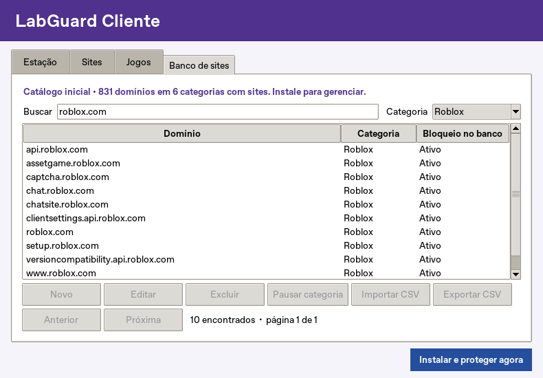

Cliente 1.2.0 / Windows 10 e 11 · 64 bits
Proteção no PC
do aluno.
O LabGuard Cliente bloqueia domínios e controla jogos na própria estação, inclusive quando o PC da TI está desligado.


Instalar e ativar
Comece por uma máquina piloto. Use uma conta administrativa da TI na instalação e uma conta padrão para o aluno.
- Abra o LabGuardCliente.exe e confirme a autorização do Windows. Guarde essa cópia para administrar a estação.
- Em Sites, escolha Bloquear os listados para usar o catálogo. Em uma aula de navegação restrita, use Permitir só os listados e inclua os domínios de login e dos materiais que a turma precisa.
- Em Jogos, revise os títulos. A opção Desinstalar o Roblox identificado vem marcada. Faça backup antes de autorizar a remoção de um jogo com dados locais.
- Clique em Instalar e proteger agora e confirme. A tarefa é iniciada com o computador ligado e volta a iniciar a cada boot. Depois de conferir o estado, a TI pode fechar a janela.
Como o cliente trata o Roblox e o Minecraft?
O cliente verifica as edições reconhecidas do Roblox da Microsoft Store. Para o Roblox clássico instalado no perfil do aluno, tenta usar o desinstalador registrado e assinado pelo fabricante na entrada do usuário. Instalações desconhecidas podem exigir remoção pela TI. A opção de remoção do Minecraft da Store precisa ser marcada separadamente e pode apagar mundos locais.
Controle os sites pela Central do técnico
Na versão 1.2.0, a aba Técnico permite importar o arquivo de vínculo gerado na Central. Os computadores vinculados recebem as listas de bloqueio e liberação definidas pelo técnico e mantêm a última lista válida quando ele estiver offline.
Abra o novo EXE como administrador e selecione Técnico → Importar vínculo. Uma instalação 1.1.0 existente é atualizada antes da conexão. Instalar a Central e seguir o guia completo →
Banco de sites
A instalação já inclui 831 domínios em seis categorias com sites. A TI pode usar a categoria Outros para novos cadastros.
- Jogos
- 209
- Roblox
- 40
- Minecraft
- 23
- Adultos
- 220
- Apostas
- 300
- IA
- 39
- Incluir um site. Abra Banco de sites → Novo, digite o domínio sem
https://, escolha a categoria, marque Ativo para bloqueio e salve. - Alterar a lista. Pesquise um domínio para editar ou excluir. Para suspender uma categoria inteira, selecione-a no filtro e clique em Pausar categoria. Use Ativar categoria para retomar.
- Importar vários domínios. Use Exportar CSV para obter o formato. No arquivo, mantenha as colunas
dominio,categoria,ativo. Em Importar CSV, confira a prévia antes de confirmar.
No modo independente, as alterações valem para a estação em que foram salvas. Quando vinculada, a estação usa os sites definidos na Central. O cliente verifica o banco durante a execução. O limite é de 10.000 cadastros e 975 domínios ativos distintos, contando os bloqueios adicionais da política.
Conferir a proteção
- Abra Estação → Atualizar estado. Confira se a verificação é recente e consulte Detalhes técnicos em caso de pendência. Para solicitar o início de uma instalação existente, use Ativar agora.
- Na conta padrão do aluno, feche e abra o Edge, Chrome ou Firefox. Teste um domínio ativo, como
roblox.com, e um site permitido pela escola. No modo restrito, confira também o login e os materiais da aula. - Após o próximo reinício do Windows, confira novamente o horário do registro em Estação. A TI pode localizar a tarefa LabGuardCliente no Agendador de Tarefas.
O cliente trabalha em segundo plano. Avisos do navegador ao bloquear uma página e telas do desinstalador do fabricante podem aparecer. Aplicativos com VPN ou DNS próprio podem exigir políticas adicionais da escola.
Desinstalar
Em Banco de sites → Exportar CSV, salve os cadastros que deseja conservar e anote quais categorias estavam pausadas. Abra a cópia baixada como administrador e selecione Estação → Desinstalar cliente.
A remoção desfaz as regras gerenciadas e remove o banco local. Para voltar a usar um jogo desinstalado, reinstale-o e restaure os dados a partir do backup da escola.